17.Mwalimu aligawa madaftari 508 kwa wanafunzi. Ikiwa aliwagawia wanafunzi 95 madaftari hayo kwa idadi sawa, je, kila mmoja alipata madaftari mangapi na yalibaki mangapi?18.Katika chati ifuatayo, andika namba zote zinazogawanyika kwa 8 bila baki.5603601242706009470802084012633018812054190492507219.Jumla ya watu 814,000 walitazama mpira wa miguu katika viwanja 37 tofauti. Ikiwa kila kiwanja kilikuwa na idadi sawa ya watu, je, kila kiwanja kilikuwa na watu wangapi? 20.Serikali iligawa jumla ya mifuko 17,556 ya mbolea kwa wakulima 231. Mifuko hiyo iligawiwa kwa usawa kwa kila mkulima. Je, kila mkulima alipata mifuko mingapi ya mbolea?